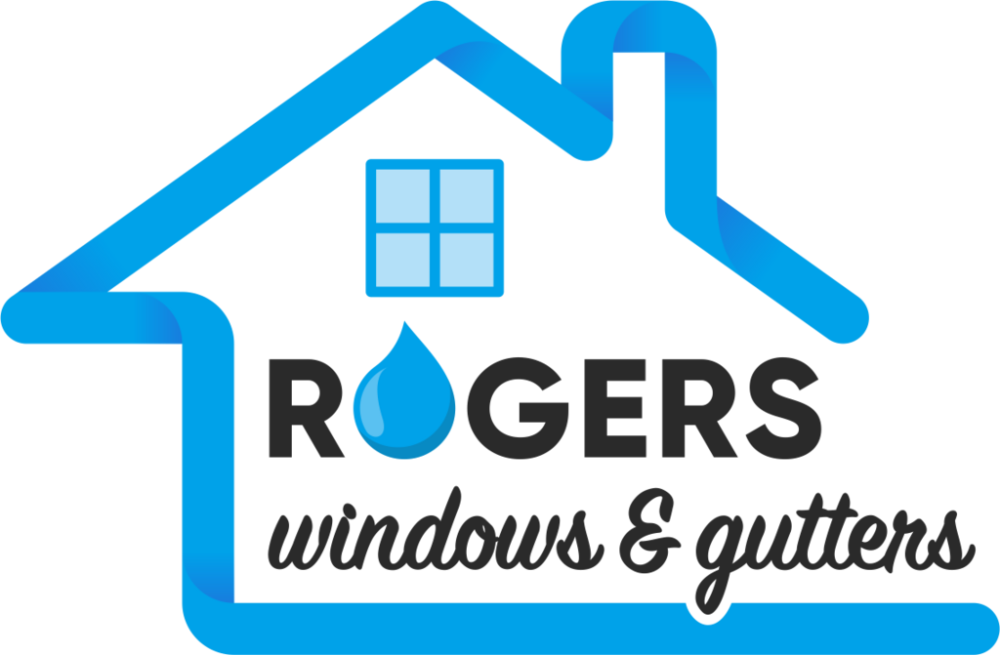
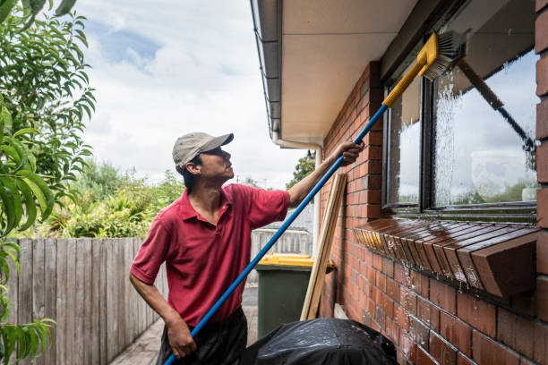
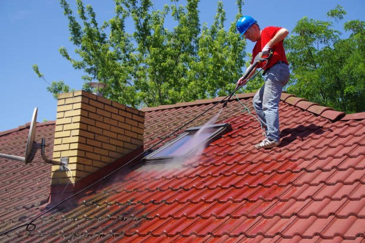

Keeping your property in top shape takes time, effort, and the right professionals. At Rogers Windows and Gutters, we’ve built our reputation in Emerald Hills by delivering exceptional cleaning services for windows, gutters, roofs, and solar panels. Whether you’re looking to brighten up your home or maintain your business’s curb appeal, we’ve got the expertise and tools to get the job done right.
Clean windows make all the difference in how your home or business looks and feels. Our window washing services in Emerald Hills are designed to bring back that crystal-clear sparkle to your glass surfaces. From smudges to stubborn grime, we handle it all with care and precision.
Residential or commercial, we use safe, eco-friendly cleaning solutions to ensure your windows aren’t just clean but also streak-free. Trust us to leave your property looking polished, bright, and professional.
If you own or manage a business in Emerald Hills, you know how important first impressions are. Clean, gleaming windows send a message of professionalism and attention to detail. Our commercial window cleaning in Emerald Hills is tailored to meet the unique needs of businesses, from small storefronts to large office complexes.
We work around your schedule to minimize disruptions while delivering outstanding results. With state-of-the-art equipment and a team of experienced professionals, we ensure your windows are spotless, inside and out.

Your roof and gutters are your home’s first line of defense against the elements. Keeping them clean and functional is crucial for preventing costly damage. At Rogers Windows and Gutters, our roofing and gutter cleaning in Emerald Hillstackles debris, dirt, and clogs to keep water flowing where it should.
Our team carefully removes leaves, moss, and other buildup from your roof and gutters. Regular maintenance not only extends the life of your roof but also protects your home from leaks and water damage.
Clogged gutters are more than a nuisance—they can lead to serious issues like water damage and foundation problems. That’s why our gutter cleaning service in Emerald Hills is a must for homeowners and businesses alike.
We provide thorough cleaning to remove debris, ensuring your gutters flow smoothly year-round. Our team takes extra care to inspect for any damage or weak spots, helping you avoid expensive repairs down the line. Let us handle the mess while you enjoy peace of mind.
Dirty solar panels don’t work as efficiently, and that means you’re losing out on potential savings. With our service for cleaning solar panels in Emerald Hills, we help you maximize your system’s performance.
Our gentle but effective cleaning methods remove dirt, pollen, and other buildup that blocks sunlight. Regular cleaning keeps your panels running at peak efficiency, saving you money and protecting your investment. With Rogers Windows and Gutters, you can trust us to keep your panels shining bright.
Emerald Hills is more than just where we work—it’s our community. We’re proud to provide reliable, high-quality cleaning services to our neighbors. Here’s why customers choose us:
At Rogers Windows and Gutters, we’re committed to helping homes and businesses in Emerald Hills look their best. From spotless windows to clean, functional gutters and energy-efficient solar panels, we take care of it all.
Ready to transform your property? Contact us today to schedule your service. Whether you need window washing services in Emerald Hills, roofing and gutter cleaning, or anything in between, we’re here to help. Let’s make your property shine!